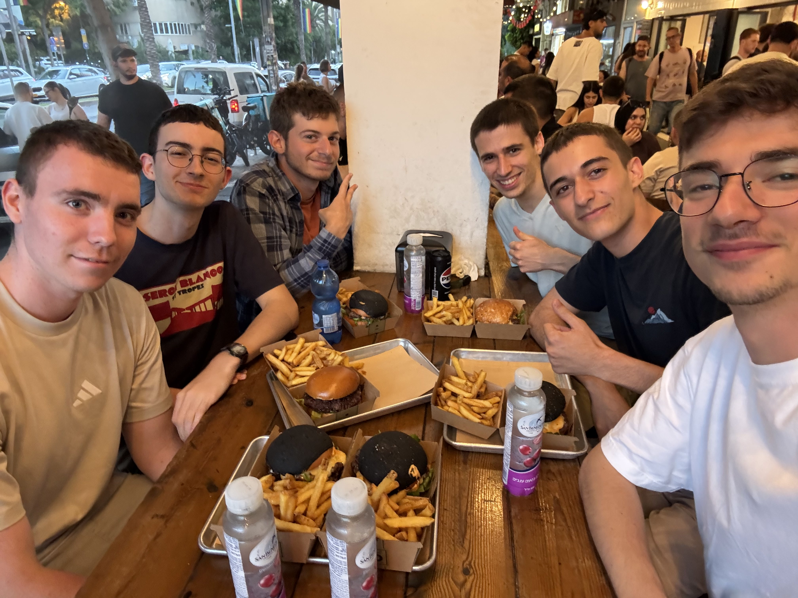
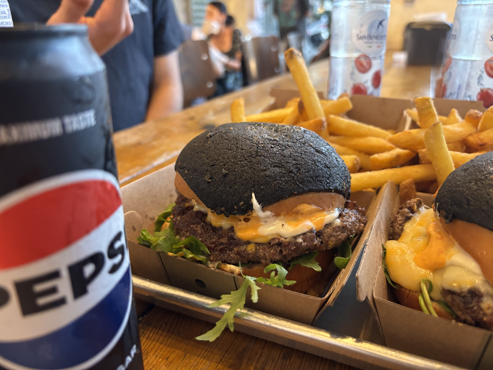
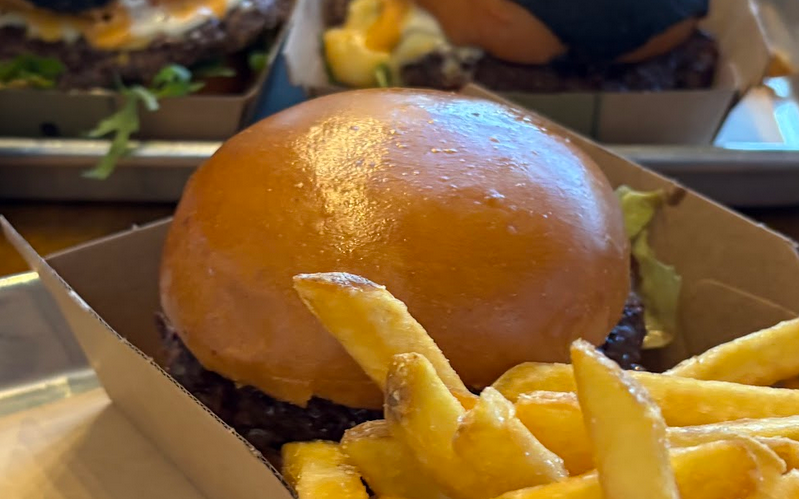
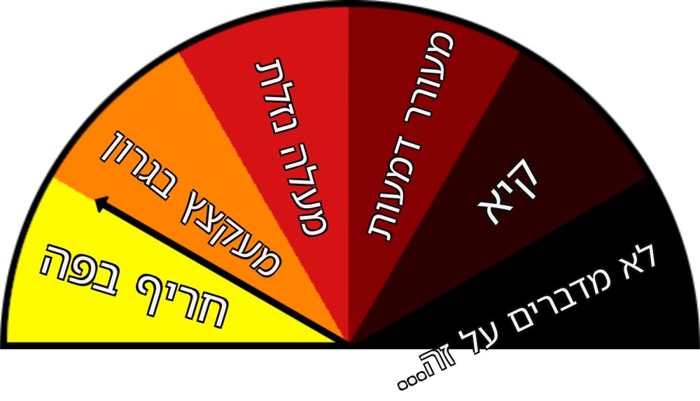

לאחר מאורעות סוערים אלו, באנו אל המנוחה ואל הנחלה והתיישבנו לחכות להזמנה. התחלנו להתפלפל עם אלון ולירון על הא ועל דא וגילינו את האוריג'ין סטורי של חבורת הנחפמים המיתולוגית. בינתיים הגיעו ההמבורגרים אך השיחה על חברינו המשותפים קלחה עד כדי כך שאור שכח לאכול (קורה לו). אלון שהזמין יחד עם מנתו san benedetto בטעם ענבים. ניכר שהבקבוק עמל רבות בטרם הוגש, הואיל והוא היה מכוסה כולו בטיפות זיעה. טיפות אלו הפכו את הבקבוק לחלקלק במיוחד (בקטע טוב), שכן הוא ברח לאלון מהידיים והפיל את השתייה של לירון.

החבורה ברגעים שלפני האוכל
נעבור למנות:
שחר, לב, איתי ואלון - ארוחת GDB קלאסית

המנה מורכבת מקציצה, חסה, סניקי חלפיניו, גבינת צ'דר וגאודה, איולי שום קונפי, לחמניה עם כיפת שום, אורוגולה.
אור הזמין את העצם הבלתי מזוהה הבא:

כדי להגיע להמבורגר הנ"ל אפשר לעשות מספר מניפולציות על התפריט.
עקב חוסר המסוגלות שלו לעיכול גלוטן, לירון הזמין עצם בלתי מזוהה אחר, שגם אליו ניתן להגיע דרך מספר מניפולציות על התפריט.
רוב החבורה הסכימה שההמבורגר טעים במיוחד אך היו בהמבורגר מספר אלמנטים שנויים במחלוקת.
בראש ובראשונה, כיפת השום השחורה והמחוספסת. כמה מחוספסת? במחלקת ה-ד' שלנו פיתחו סימולציה שתמחיש את ההרגשה.
חלק טענו שכיפת השום לא מוסיפה הרבה מלבד לכלוך על הידיים ושלא היה צורך בה, אך מילים אלו מאת א. רן יוכלו בקלות לשנות את דעתכם:
"אני מאוד מתחבר לקונספט של לחמניית השום. זה לדעתי מוסיף לחוויה בצורה שלא כל כך מדברים עליה, כי קשה לתמלל את זה. מבלי להכביד על הקציצה עצמה או לשנות את מרקם ההמבורגר כמנה הוליסטית, טיגון הלחמניה בשום מוסיף לחווית האכילה נגיעה שומית בכל ביס וביס, וכך באופן רציף ובלתי אמיד משפר את הטעם של המנה".
תוך כדי ארוחה, חלק מהחבורה התחילה להרגיש הרגשות משונות בחלל הפה. כאשר שיתפנו בחוויות, לירון העלה חשש שההמבורגרים מגיעים עם חלפיניו מה שיכול להסביר את המאורע.
התחלנו לדון ברמת החריפות של ההמבורגר. הנה התוצאות:

הרץ "n" על מנת להמשיך לעמוד הבא.